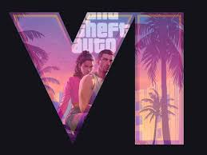
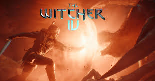
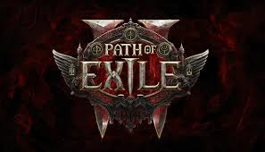

All The Games Teased in The Game AwardsOne of the most anticipated event of the year finally happened Lets see what are to come and what have yet to be announced
|
GTA 6 Trailer Number 2While the fans have been waiting for Rockstar to drop the trailer 2 on the Game Awards Rockstar has kept it’s silence. A lot of the community has taken this as a treasure hunt for the new release date while a considerable amount is certain that the new trailer will come on December 27 I guess we shall yet to see. |
New Witcher Game Protagonist Caused Division Among FansNew Witcher game trailer released in the Game Awards divided the fans to two while some says protagonist should be a new character some argue the character being a familiar face contributes the story much more and connects the player to the old roots of the game with it’s familiarity while keeping things fresh with not repeating characters for 4 games in a row. |
Path of Exile 2 Early AccessThe long awaited game from Grinding Gear Games is finally out as an early access. Fans who have played the first games has expressed their fascination to games graphics the new character classes and much more. It is expected to release as a free to play game in 6 to 8 month but even now games numbers have reached incredibly high. |